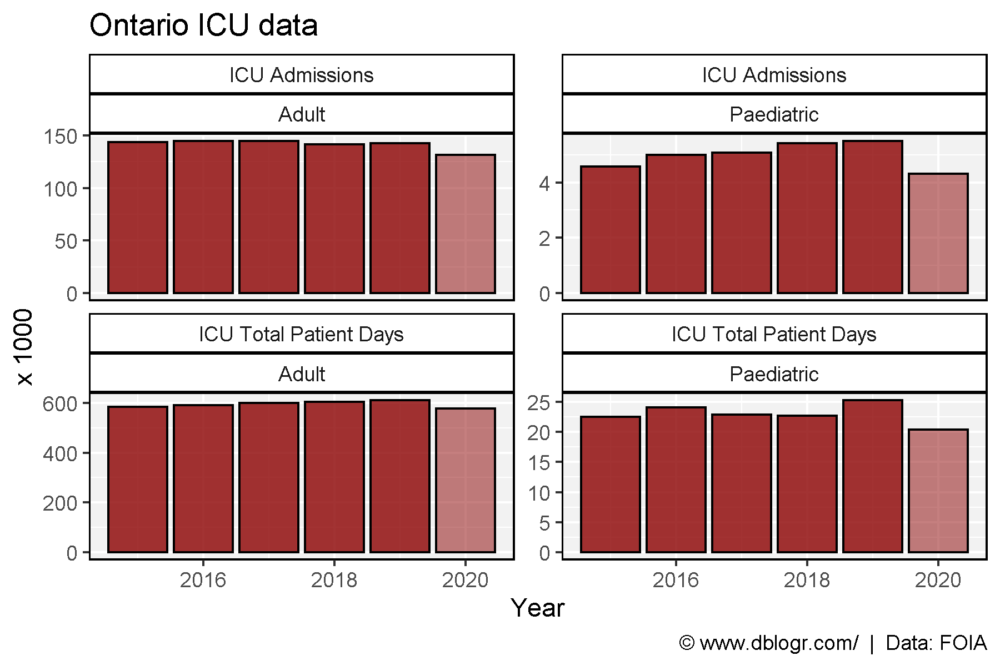

Prepare Data
# devtools::install_github("derekmichaelwright/agData")
library(agData) # Loads: tidyverse, ggpubr, ggbeeswarm, ggrepel
library(readxl) # read_xlsx()
# Hospital bed capacity
d1 <- read_xlsx("2021-05-05-FOIP-Request-with-JCCF-calculations.xlsx",
"AcuteCare_P2_Occupancy", range = "D70:J82") %>%
gather(Year, Value, 2:ncol(.)) %>%
filter(!is.na(Value)) %>%
mutate(Date = as.Date(paste(Year, Month, "15", sep = "-"), format = "%Y-%b-%d"))
d2 <- read_xlsx("2021-05-05-FOIP-Request-with-JCCF-calculations.xlsx",
"AcuteCare_P2_Occupancy", range = "A2:BN50") %>%
rename(Measurement=Column1) %>%
mutate(Zone = fill_NA(Zone),
Facility = fill_NA(Facility)) %>%
gather(Month, Value, 4:ncol(.)) %>%
mutate(Year = c(rep(2016:2020, each = (12*48)), rep(2021, (3*48))),
Month = substr(Month, 1, 3),
Date = as.Date(paste(Year, Month, "15", sep = "-"), format = "%Y-%b-%d"))
# ICU capacity
d3 <- read_xlsx("2021-05-05-FOIP-Request-with-JCCF-calculations.xlsx",
"ICU_P2_CapacityUtilization", range = "A2142:F2154") %>%
rename(Month=1) %>%
gather(Year, Value, 2:ncol(.)) %>%
mutate(Date = as.Date(paste(Year, Month, "15", sep = "-"), format = "%Y-%b-%d"))
d4 <- read_xlsx("2021-05-05-FOIP-Request-with-JCCF-calculations.xlsx",
"ICU_P2_CapacityUtilization", range = "A2124:P2136") %>%
rename(Month=1) %>%
gather(Measurement, Value, 2:ncol(.)) %>%
mutate(Year = rep(2016:2020, each = (12*3)),
Date = as.Date(paste(Year, Month, "15", sep = "-"), format = "%Y-%b-%d"),
Measurement = ifelse(grepl("Funded Beds", Measurement), "Funded Beds", Measurement),
Measurement = ifelse(grepl("Avg Occupancy", Measurement), "Avg Occupancy", Measurement),
Measurement = ifelse(grepl("Utilization", Measurement), "Utilization", Measurement))
d5 <- read_xlsx("2021-05-05-FOIP-Request-with-JCCF-calculations.xlsx",
"ICU_P2_CapacityUtilization", range = "A2:Q2109") %>%
rename(Date=1) %>%
mutate(Date = as.Date(Date))
Hospital Bed Capacity
Alberta
# Plot
mp <- ggplot(d1, aes(x = Date, y = Value)) +
geom_vline(xintercept = as.Date("2020-03-01"), alpha = 0.6) +
geom_hline(yintercept = 1, size = 1.5, color = "darkred", alpha = 0.8) +
geom_smooth(method = "loess", se = F, size = 0.5, color = "black") +
geom_line(size = 1.5, alpha = 0.8, color = "darkgreen") +
geom_point(alpha = 0.8) +
scale_x_date(date_breaks = "year", date_labels = "%Y") +
ylim(c(0,1)) +
theme_agData() +
labs(title = "Alberta Hospital Bed Utilization",
y = "Percent", x = NULL,
caption = "\xa9 www.dblogr.com/ | Data: JCCF")
ggsave("alberta_icu_01.png", mp, width = 6, height = 4)

By Region
# Prep data
xx <- d2 %>% filter(Measurement != "Occupancy")
# Plot
mp <- ggplot(xx, aes(x = Date, y = Value, color = Measurement)) +
geom_vline(xintercept = as.Date("2020-03-01"), alpha = 0.6) +
geom_line(size = 1.25, alpha = 0.8) +
scale_color_manual(name = NULL, values = c("darkgreen", "darkred")) +
scale_x_date(date_breaks = "year", date_labels = "%Y") +
facet_wrap(Zone + Facility ~ ., scales = "free_y") +
theme_agData(legend.position = "bottom") +
labs(title = "Alberta Hospital Bed Utilization", y = NULL, x = NULL,
caption = "\xa9 www.dblogr.com/ | Data: JCCF")
ggsave("alberta_icu_02.png", mp, width = 12, height = 8)

ICU Utilization
Alberta
# Plot
mp <- ggplot(d3, aes(x = Date, y = Value)) +
geom_vline(xintercept = as.Date("2020-03-01"), alpha = 0.6) +
geom_hline(yintercept = 1, size = 1.5, color = "darkred", alpha = 0.8) +
geom_smooth(method = "loess", se = F, size = 0.5, color = "black") +
geom_line(size = 1.5, alpha = 0.8, color = "darkgreen") +
geom_point(alpha = 0.8) +
scale_x_date(date_breaks = "year", date_labels = "%Y") +
ylim(c(0,1)) +
theme_agData() +
labs(title = "Alberta ICU Utilization",
y = "Percent", x = NULL,
caption = "\xa9 www.dblogr.com/ | Data: JCCF")
ggsave("alberta_icu_03.png", mp, width = 6, height = 4)

Funded vs. Used
# Prep data
xx <- d4 %>% filter(Measurement != "Utilization")
# Plot
mp <- ggplot(xx, aes(x = Date, y = Value, color = Measurement)) +
geom_vline(xintercept = as.Date("2020-03-01"), alpha = 0.6) +
geom_line(size = 1.5, alpha = 0.8) +
scale_color_manual(name = NULL, values = c("darkgreen", "darkred")) +
scale_x_date(date_breaks = "year", date_labels = "%Y") +
theme_agData(legend.position = "bottom") +
labs(title = "Alberta ICU Utilization", y = "ICU Beds", x = NULL,
caption = "\xa9 www.dblogr.com/ | Data: JCCF")
ggsave("alberta_icu_04.png", mp, width = 6, height = 4)

By Region
# Plot
mp <- ggplot(d5, aes(x = Date, y = AVG_OCC_PCT)) +
geom_vline(xintercept = as.Date("2020-03-01"), alpha = 0.3) +
geom_hline(yintercept = 1, alpha = 0.6) +
geom_smooth(method = "loess", se = F, size = 0.5, color = "black") +
geom_line(size = 1, alpha = 0.8, color = "darkgreen") +
facet_wrap(ZONE + SITE ~ .) +
theme_agData() +
labs(title = "Alberta ICU Utilization", y = NULL, x = NULL,
caption = "\xa9 www.dblogr.com/ | Data: JCCF")
ggsave("alberta_icu_05.png", mp, width = 12, height = 8)

xx <- d5 %>%
select(Date, ZONE, SITE, AVG_FUNDED_BEDS, AVG_OCC) %>%
gather(Trait, Value, 4:5) %>%
mutate(Trait = plyr::mapvalues(Trait, c("AVG_FUNDED_BEDS", "AVG_OCC"),
c("Funded Beds", "Avg Occupancy")))
# Plot
mp <- ggplot(xx, aes(x = Date, y = Value, color = Trait)) +
geom_vline(xintercept = as.Date("2020-03-01"), alpha = 0.3) +
geom_smooth(data = xx %>% filter(Trait == "Avg Occupancy"),
method = "loess", se = F, size = 0.5, color = "black") +
geom_line(size = 1, alpha = 0.8) +
facet_wrap(ZONE + SITE ~ ., scale = "free_y") +
scale_color_manual(values = c("darkgreen", "darkred")) +
theme_agData(legend.position = "bottom") +
labs(title = "Alberta ICU Utilization", y = NULL, x = NULL,
caption = "\xa9 www.dblogr.com/ | Data: JCCF")
ggsave("alberta_icu_06.png", mp, width = 12, height = 8)

Funded Beds
# Plot
mp <- ggplot(d5, aes(x = Date, y = AVG_FUNDED_BEDS, group = REPORTS_SITE_NAME)) +
geom_hline(yintercept = 1, alpha = 0.6) +
geom_vline(xintercept = as.Date("2020-03-01"), alpha = 0.3) +
geom_line(size = 1.25, alpha = 0.8, color = "darkred") +
scale_x_date(date_breaks = "year", date_labels = "%Y") +
theme_agData() +
labs(title = "Alberta - Number of Funded ICU beds", y = "Percent", x = NULL,
caption = "\xa9 www.dblogr.com/ | Data: JCCF")
ggsave("alberta_icu_07.png", mp, width = 6, height = 4)

Ontario
This data comes from a FOIA request done by a business owner in Ontario.
# Prep data
xx <- read.csv("ontario_icu.csv") %>%
mutate(Group = ifelse(Year == 2020, "2020", "pre-2020"))
# Plot
mp <- ggplot(xx, aes(x = Year, y = Value / 1000, fill = Group)) +
geom_bar(stat = "identity", color = "black") +
facet_wrap(Measurement ~ Age, scale = "free_y") +
scale_fill_manual(values = c(alpha("darkred", 0.5), alpha("darkred", 0.8))) +
theme_agData(legend.position = "none") +
labs(title = "Ontario ICU data", y = "x 1000",
caption = "\xa9 www.dblogr.com/ | Data: FOIA")
ggsave("alberta_icu_08.png", mp, width = 6, height = 4)

© Derek Michael Wright www.dblogr.com/